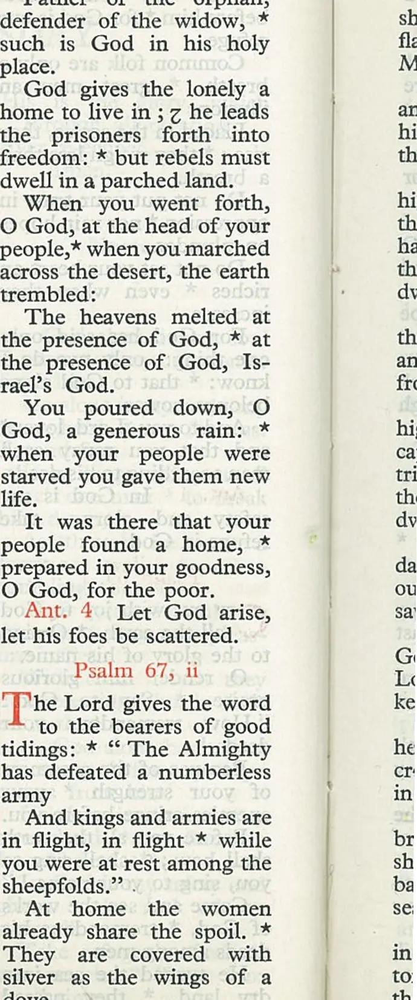
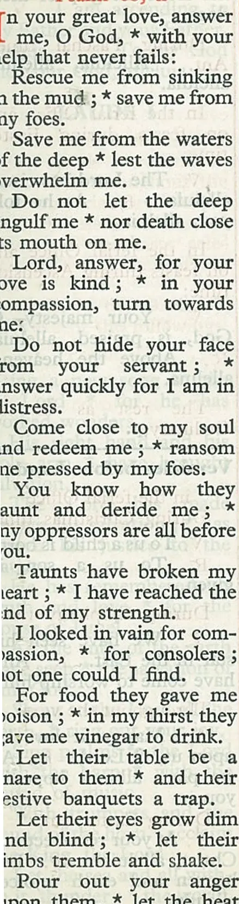
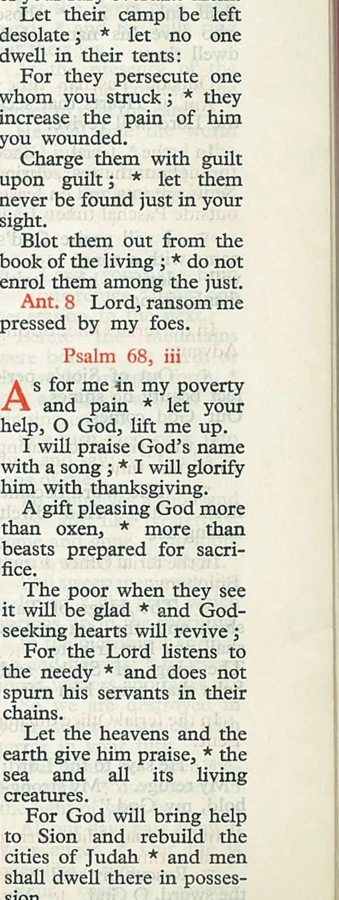
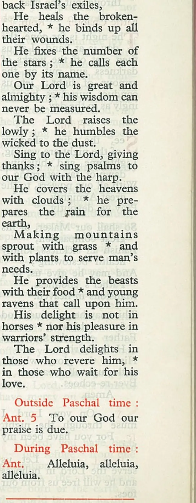
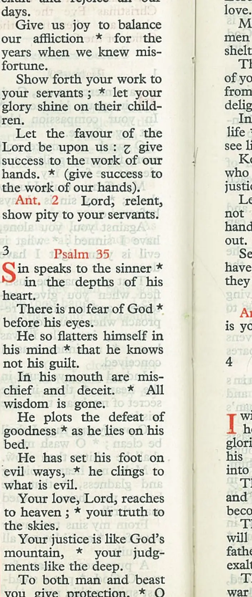
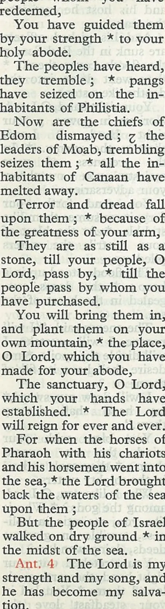
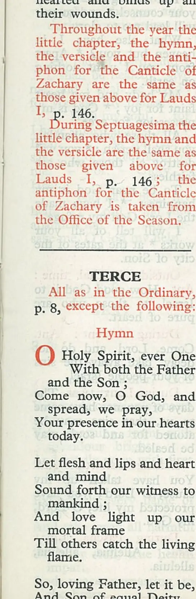
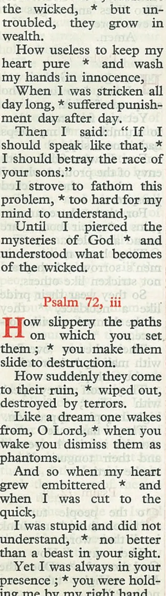
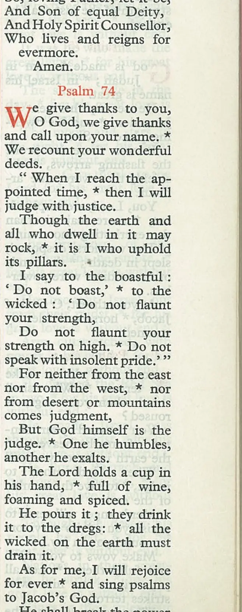

Check the marked words against the scan beside them. Click any word to correct it. The sheet remembers what you do, so you can close it and come back. Press send corrections when you stop. That puts your work on the clipboard, and you paste it into a message.
Some marks are struck through. The book prints no such mark, so they are stray ink. Press delete the stray ink on a page to take them all off it, and click any one of them to keep it.
Tab go to the next marked word Enter keep what you typed and go on Esc the engine was right, go on empty the word to delete it type two words to add one type R/ or V/ for ℟ and ℣
a missing character goes in with the word beside it: click the word and type * Praise where the book has * Praise. The * button does that for you. a missing drop capital is not a word: press show the structure and then ¶ on the line it opens.
the machine made of these pages: .text on 26 pages .open on 24 pages .rubric on 23 pages .psalm on 19 pages .rule on 14 pages .bheading on 10 pages .ant on 8 pages . on 8 pages .hour on 4 pages








